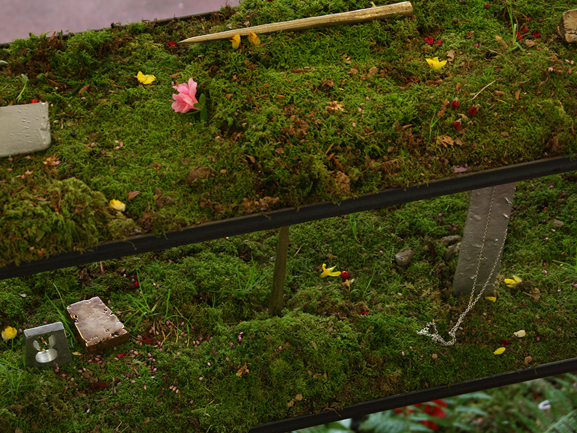

Jardin d'hiver
Lichen, terre, mousse, camelias, fougères, sable, coquillages concassés, paille
Essayer de la sculpture avec Gabriel Haberland et Boris Régnier (mobilier et bijoux en métal et fonte de métal, vêtements)
Studio plijadur, Douarnenez
Janvier 2019
-> Article Ouest France : Douarnenez. Le Studio Plijadur, carrefour d’expérimentations artistiques
